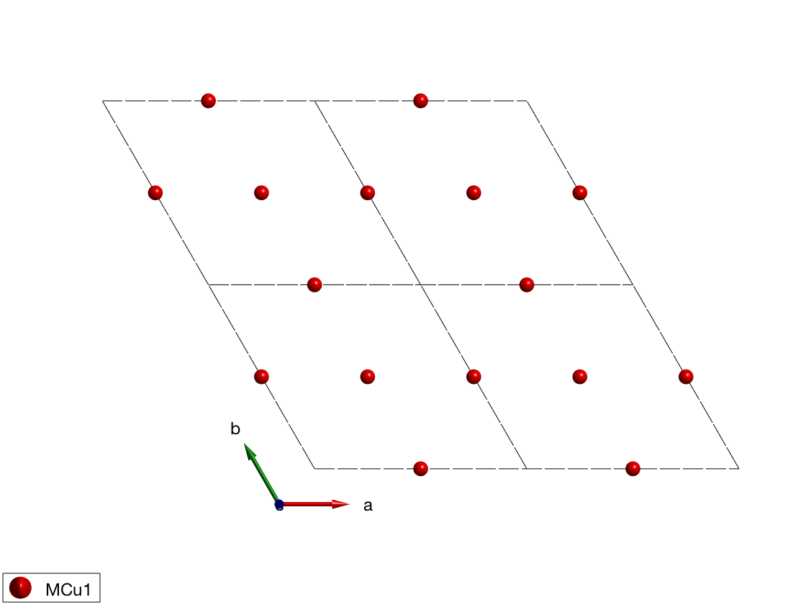
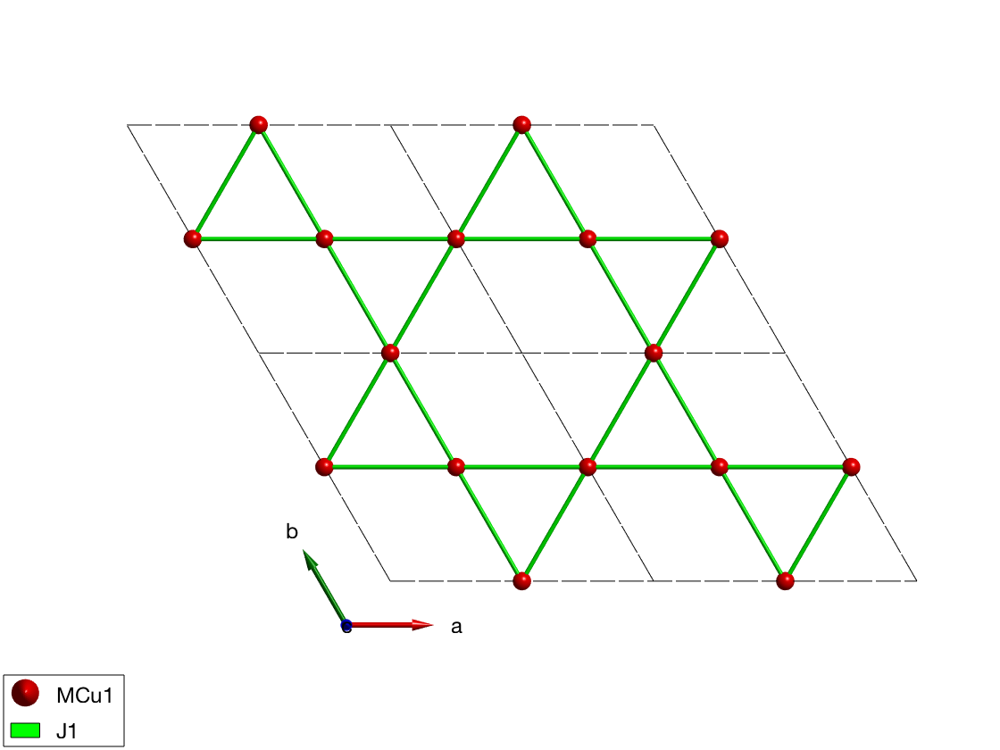
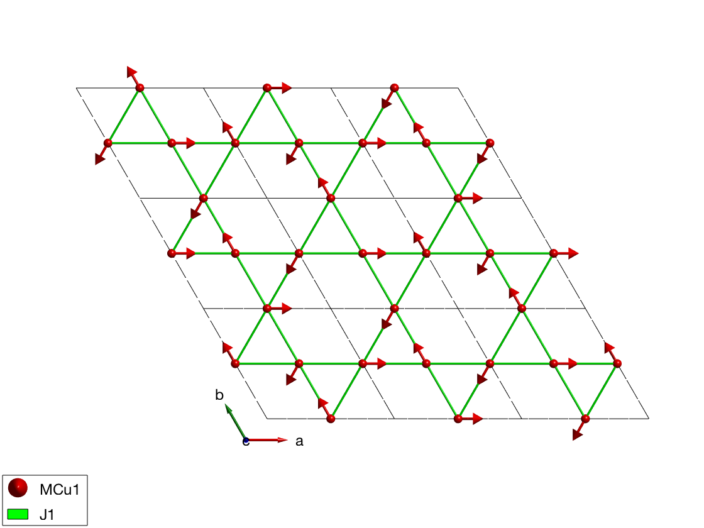
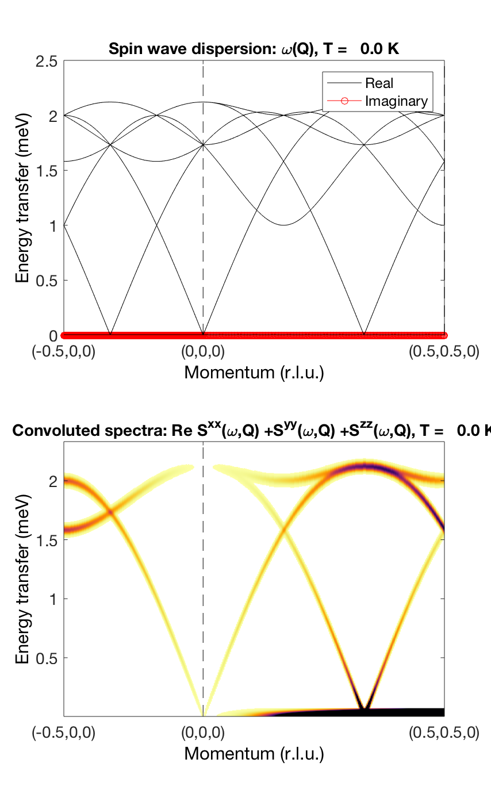
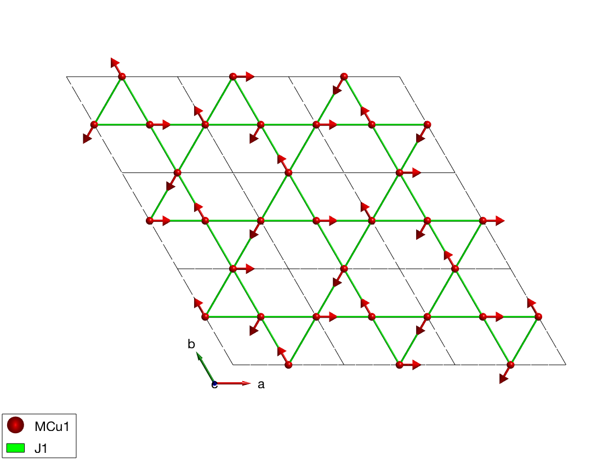
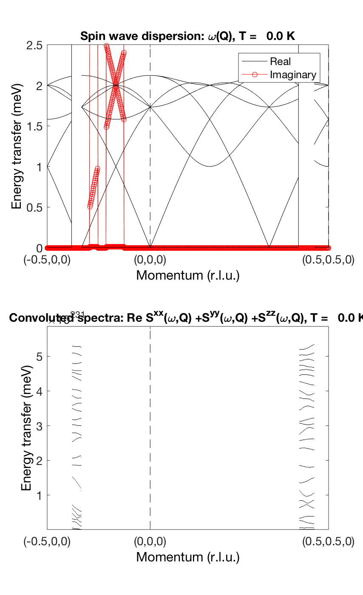
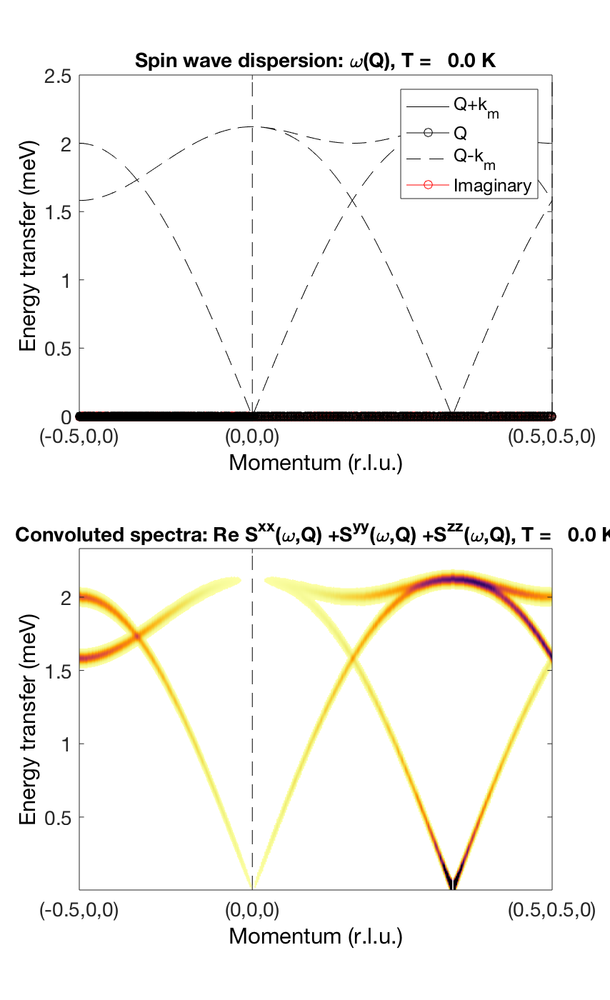
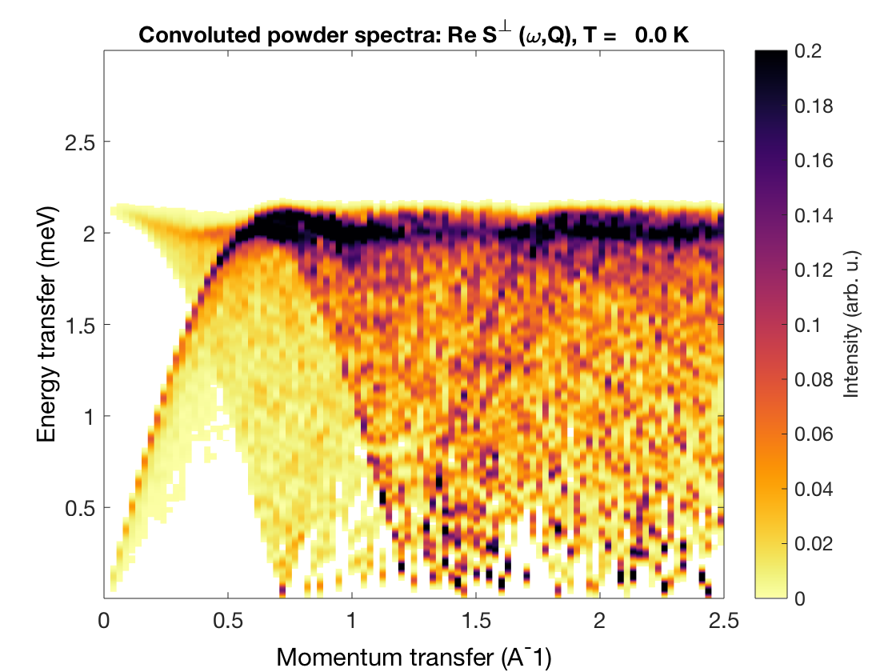
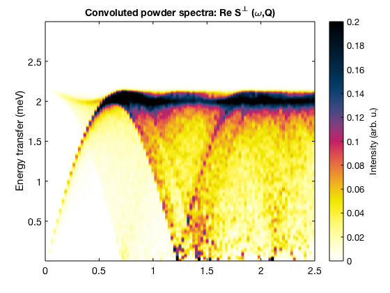
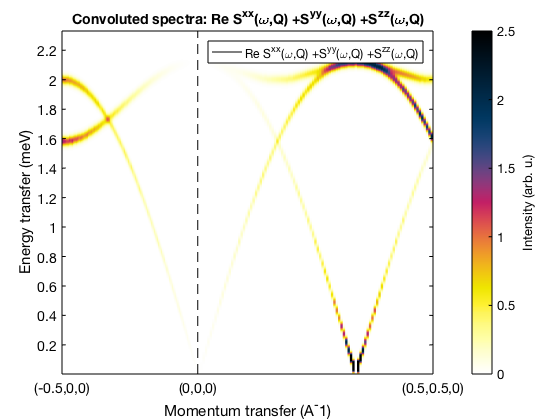

Contents
sqrt(3) x sqrt(3) Kagome antiferromagnet
We create a lattice with space group "P -3" where all first neighbor bonds are symmetry equivalent and add a magnetic Cr+ with S=1 spin.
AF33kagome = spinw; AF33kagome.fileid(0) AF33kagome.genlattice('lat_const',[6 6 40],'angled',[90 90 120],'sym','P -3') AF33kagome.addatom('r',[1/2 0 0],'S', 1,'label','MCu1','color','r') plot(AF33kagome,'range',[2 2 1],'zoom',-0.5)
Create bonds
Generate the list of bonds and lists them.
AF33kagome.gencoupling('maxDistance',7) display('Rows: dlx, dly, dlz, at1, at2, idx, ma1, ma2, ma3') AF33kagome.couplingtable.table display('Bond vectors (first three rows) and bond distances') AF33kagome.couplingtable.bondv
Rows: dlx, dly, dlz, at1, at2, idx, ma1, ma2, ma3
ans =
Columns 1 through 6
0 0 0 0 1 -1
1 -1 0 0 0 0
0 0 0 0 0 0
3 1 2 3 1 2
1 2 3 1 2 3
1 1 1 1 1 1
0 0 0 0 0 0
0 0 0 0 0 0
0 0 0 0 0 0
Columns 7 through 12
1 0 -1 0 -1 1
-1 1 0 0 -1 1
0 0 0 0 0 0
1 2 3 1 2 3
2 3 1 2 3 1
2 2 2 2 2 2
0 0 0 0 0 0
0 0 0 0 0 0
0 0 0 0 0 0
Columns 13 through 18
0 -1 1 0 -1 1
1 -1 0 1 -1 0
0 0 0 0 0 0
1 2 3 2 3 1
1 2 3 2 3 1
3 3 3 4 4 4
0 0 0 0 0 0
0 0 0 0 0 0
0 0 0 0 0 0
Columns 19 through 21
0 -1 1
1 -1 0
0 0 0
3 1 2
3 1 2
5 5 5
0 0 0
0 0 0
0 0 0
Bond vectors (first three rows) and bond distances
ans =
Columns 1 through 7
0 -0.5000 0.5000 0 0.5000 -0.5000 0.5000
0.5000 -0.5000 0 -0.5000 0.5000 0 -0.5000
0 0 0 0 0 0 0
3.0000 3.0000 3.0000 3.0000 3.0000 3.0000 5.1962
Columns 8 through 14
0.5000 -1.0000 -0.5000 -0.5000 1.0000 0 -1.0000
1.0000 -0.5000 0.5000 -1.0000 0.5000 1.0000 -1.0000
0 0 0 0 0 0 0
5.1962 5.1962 5.1962 5.1962 5.1962 6.0000 6.0000
Columns 15 through 21
1.0000 0 -1.0000 1.0000 0 -1.0000 1.0000
0 1.0000 -1.0000 0 1.0000 -1.0000 0
0 0 0 0 0 0 0
6.0000 6.0000 6.0000 6.0000 6.0000 6.0000 6.0000
Hamiltonian
We create AFM first neighbor interactions.
AF33kagome.addmatrix('label','J1','value',1.00,'color','g') AF33kagome.addcoupling('mat','J1','bond',1) plot(AF33kagome,'range',[3 3 1],'zoom',-0.8)
Generate magnetic structure I.
We create the k = (1/3 1/3 0) magnetic structure, with the three spin directions in the unit cell (120 degree between neighbors). The spin vector components are given in the coordinate system of the lattice vectors (abc). We have two possibilities to store the structure. Either we use the magnetic supercell 3x3x1 times the unit cell and. In this case the spin waves are calculated on the larger cell that is a zero-k structure.
S0 = [0 0 -1; 1 1 -1; 0 0 0]; AF33kagome.genmagstr('mode','helical','k',[-1/3 -1/3 0],'n',[0 0 1],'unitS','lu','S',S0,'nExt',[3 3 1]); display('Magnetic structure with spins 1 2 ... as columns, xyz as rows:') AF33kagome.mag_str AF33kagome.mag_str.S display('Magnetic atoms as columns:') AF33kagome.magtable.R display('Magnetic spins:') AF33kagome.magtable.M display('Ground state energy (meV/spin)') AF33kagome.energy plot(AF33kagome,'range',[3 3 1])
Magnetic structure with spins 1 2 ... as columns, xyz as rows:
ans =
N_ext: [3 3 1]
k: [-0.3333 -0.3333 0]
S: [3x27 double]
n: [0 0 1]
ans =
Columns 1 through 7
-0.5000 -0.5000 -0.5000 1.0000 1.0000 -0.5000 -0.5000
0.8660 0.8660 -0.8660 0 0 0.8660 -0.8660
0 0 0 0 0 0 0
Columns 8 through 14
-0.5000 1.0000 1.0000 1.0000 -0.5000 -0.5000 -0.5000
-0.8660 0.0000 0 0 0.8660 -0.8660 -0.8660
0 0 0 0 0 0 0
Columns 15 through 21
1.0000 -0.5000 -0.5000 -0.5000 -0.5000 -0.5000 1.0000
0.0000 0.8660 0.8660 -0.8660 -0.8660 -0.8660 0.0000
0 0 0 0 0 0 0
Columns 22 through 27
-0.5000 -0.5000 -0.5000 1.0000 1.0000 -0.5000
0.8660 0.8660 -0.8660 0.0000 0.0000 0.8660
0 0 0 0 0 0
Magnetic atoms as columns:
ans =
Columns 1 through 7
0.5000 0 0.5000 1.5000 1.0000 1.5000 2.5000
0 0.5000 0.5000 0 0.5000 0.5000 0
0 0 0 0 0 0 0
Columns 8 through 14
2.0000 2.5000 0.5000 0 0.5000 1.5000 1.0000
0.5000 0.5000 1.0000 1.5000 1.5000 1.0000 1.5000
0 0 0 0 0 0 0
Columns 15 through 21
1.5000 2.5000 2.0000 2.5000 0.5000 0 0.5000
1.5000 1.0000 1.5000 1.5000 2.0000 2.5000 2.5000
0 0 0 0 0 0 0
Columns 22 through 27
1.5000 1.0000 1.5000 2.5000 2.0000 2.5000
2.0000 2.5000 2.5000 2.0000 2.5000 2.5000
0 0 0 0 0 0
Magnetic spins:
ans =
Columns 1 through 7
-0.5000 -0.5000 -0.5000 1.0000 1.0000 -0.5000 -0.5000
0.8660 0.8660 -0.8660 0 0 0.8660 -0.8660
0 0 0 0 0 0 0
Columns 8 through 14
-0.5000 1.0000 1.0000 1.0000 -0.5000 -0.5000 -0.5000
-0.8660 0.0000 0 0 0.8660 -0.8660 -0.8660
0 0 0 0 0 0 0
Columns 15 through 21
1.0000 -0.5000 -0.5000 -0.5000 -0.5000 -0.5000 1.0000
0.0000 0.8660 0.8660 -0.8660 -0.8660 -0.8660 0.0000
0 0 0 0 0 0 0
Columns 22 through 27
-0.5000 -0.5000 -0.5000 1.0000 1.0000 -0.5000
0.8660 0.8660 -0.8660 0.0000 0.0000 0.8660
0 0 0 0 0 0
Ground state energy (meV/spin)
ans =
-1
 Calculate spin wave dispersion I.
We plot the real and imaginary part of the dispersion. By observing the imaginary part of the dispersion we can ensure that we have the right magnetic ground state. After calculating the diagonal of the correlation function we can see that only a few modes have non-zero intensity.
kag33Spec = AF33kagome.spinwave({[-1/2 0 0] [0 0 0] [1/2 1/2 0] 100}, 'hermit',false);
kag33Spec = sw_egrid(kag33Spec,'component','Sxx+Syy+Szz');
figure
sw_plotspec(kag33Spec,'mode',1,'axLim',[0 2.5],'colorbar',false','colormap',[0 0 0],'imag',true,'sortMode',true,'dashed',true)
figure
sw_plotspec(kag33Spec,'mode',3,'dE',0.05,'axLim',[0 2.5],'dashed',true)
  Generate magnetic structure II.
Alternatively we can use the original unit cell, in this case the spin wave algorithm will calculate the dispersion on the assumption that the structure is incommensurate. The advantage of this method is that it produces less number of spin wave modes, more stable and faster.
S0 = [0 0 -1; 1 1 -1; 0 0 0]; AF33kagome.genmagstr('mode','helical','k',[-1/3 -1/3 0],'n',[0 0 1],'unitS','lu','S',S0,'nExt',[1 1 1]); display('Magnetic structure with spins 1 2 ... as columns, xyz as rows:') AF33kagome.mag_str AF33kagome.mag_str.S display('Magnetic atoms as columns:') AF33kagome.magtable.R display('Magnetic spins:') AF33kagome.magtable.M display('Ground state energy (meV/spin)') AF33kagome.energy plot(AF33kagome,'range',[3 3 1])
Magnetic structure with spins 1 2 ... as columns, xyz as rows:
ans =
N_ext: [1 1 1]
k: [-0.3333 -0.3333 0]
S: [3x3 double]
n: [0 0 1]
ans =
-0.5000 -0.5000 -0.5000
0.8660 0.8660 -0.8660
0 0 0
Magnetic atoms as columns:
ans =
0.5000 0 0.5000
0 0.5000 0.5000
0 0 0
Magnetic spins:
ans =
-0.5000 -0.5000 -0.5000
0.8660 0.8660 -0.8660
0 0 0
Ground state energy (meV/spin)
ans =
-1.0000
 Calculate spin wave dispersion II.
We plot the real and imaginary part of the dispersion. There are only three modes now, only the ones that have intensity. The calculated intensity map is identical to the previous calculation.
kag33Spec = AF33kagome.spinwave({[-1/2 0 0] [0 0 0] [1/2 1/2 0] 100}, 'hermit',false);
kag33Spec = sw_egrid(kag33Spec,'component','Sxx+Syy+Szz');
figure
sw_plotspec(kag33Spec,'mode',1,'axLim',[0 2.5],'colorbar',false','colormap',[0 0 0],'imag',true,'sortMode',true,'dashed',true)
figure
sw_plotspec(kag33Spec,'mode',3,'dE',0.05,'axLim',[0 2.5],'dashed',true)
  Powder spectrum
Using the small magnetic cell, the calculation of the powder spectrum is ~4.5 times faster than for the 3x3x1 magnetic supercell. The speed of the powder calculation is depending on the nomber of Q points and nomber of random orientations: T ~ nQ * nRand, it is mostly independent of the number size of the energy bin vector.
kag33Pow = AF33kagome.powspec(linspace(0,2.5,100),'Evect',linspace(0,3,500),'hermit',false,'nRand',1000); figure; sw_plotspec(kag33Pow,'axLim',[0 0.2],'dE',0.05)
Warning: Eigenvectors of defective eigenvalues cannot be orthogonalised! Warning: Eigenvectors of defective eigenvalues cannot be orthogonalised! 
Written by Bjorn Fak & Sandor Toth 07-June-2014